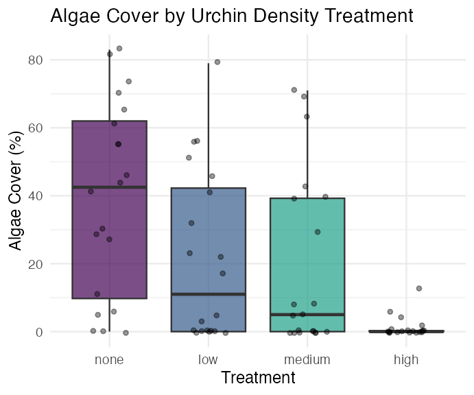
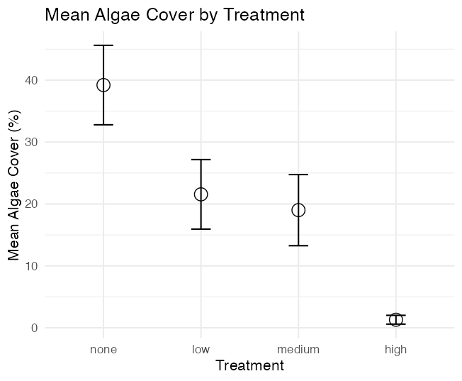

## Data
## # A tibble: 6 × 4
## treat patch quad algae
## <fct> <fct> <dbl> <dbl>
## 1 high 1 1 0
## 2 high 1 2 0
## 3 high 1 3 0
## 4 high 1 4 6
## 5 high 1 5 2
## 6 high 2 1 0
##
##
## Treatment levels:
## [1] "none" "low" "medium" "high"Lecture: Linear Mixed Models
Random effects for nested and hierarchical data
ANOVA
Mixed Models
The modern mixed-model (lmer) alternative to a traditional nested ANOVA: afex for unbalanced designs, random-effects notation, F vs. Chi-square tests, diagnostics, post-hoc comparisons, and a by-hand F-ratio calculation for comparison — on the sea urchin grazing / algae cover dataset.
Where We Left Off
Covered last time — nested ANOVA, the traditional way:
- Factorial vs. nested designs
- The nested-design linear model and variance partitioning
- Fixed vs. random effects — B nested in A
- The naive (wrong) factorial model vs.
aov(..., Error(...))
Note
✅ Key idea from last lecture
patch nested in treat needs the right error term — MS_{patch(treat)}, not MS_{resid} — or the F-test for treatment is wrong. Today: the modern alternative to specifying that error term by hand.
Tip
🖐 Notice
Same sea urchin grazing / algae cover dataset as last time — same question, same data, a different (and more flexible) way to fit the model.
Part 1 · Setup — The Sea Urchin Data, Again
Data Overview
Same dataset as the nested ANOVA lecture: patch (random patches 1–16 where treatments were applied), treat (urchin density treatment), quad (replicate quadrats within each treatment-patch combination), algae (percentage cover of filamentous algae — the response variable).
## Summary statistics by treatment:
## # A tibble: 4 × 7
## treat n mean sd se min max
## <fct> <int> <dbl> <dbl> <dbl> <dbl> <dbl>
## 1 none 20 39.2 28.7 6.41 0 83
## 2 low 20 21.6 25.1 5.62 0 79
## 3 medium 20 19 25.7 5.74 0 71
## 4 high 20 1.3 3.18 0.711 0 13Part 2 · Modern Approaches — afex and Mixed Models
What to Do If It’s an Unbalanced Design
The afex package is specifically designed for ANOVA with Type III SS, and handles nested designs well — even when unbalanced.
options(contrasts = c("contr.sum", "contr.poly"))
u_afex_model <- aov_car(algae ~ treat + Error(patch),
data = u_df,
fun_aggregate = mean)
cat("AFEX nested ANOVA results:\n\n")
## AFEX nested ANOVA results:
summary(u_afex_model)
## Anova Table (Type 3 tests)
##
## Response: algae
## num Df den Df MSE F ges Pr(>F)
## treat 3 12 354.03 2.7171 0.40451 0.09126 .
## ---
## Signif. codes: 0 '***' 0.001 '**' 0.01 '*' 0.05 '.' 0.1 ' ' 1The Modern Way — Mixed-Model ANOVA
Fit the model with treatment as a fixed effect, and patch nested within treatment as a random effect: lmer(algae ~ treat + (1|treat:patch), ...).
BOBYQA (Bound Optimization BY Quadratic Approximation) is an optimization algorithm used in mixed-effects modeling to find the parameter values that maximize the likelihood function — useful for fitting complex nested models.
Notation we’ll get into later:
- Random intercept, fixed slope —
(1|patch) - Random intercept, random slope —
(1|treat:patch)
u_lmer_model <- lmer(algae ~ treat + (1|treat:patch), data = u_df,
control = lmerControl(optimizer = "bobyqa",
optCtrl = list(maxfun = 2e5)))
cat("Mixed model summary:\n\n")
## Mixed model summary:
summary(u_lmer_model)
## Linear mixed model fit by REML. t-tests use Satterthwaite's method [
## lmerModLmerTest]
## Formula: algae ~ treat + (1 | treat:patch)
## Data: u_df
## Control: lmerControl(optimizer = "bobyqa", optCtrl = list(maxfun = 200000))
##
## REML criterion at convergence: 684.9
##
## Scaled residuals:
## Min 1Q Median 3Q Max
## -1.9808 -0.3106 -0.1093 0.2831 2.5910
##
## Random effects:
## Groups Name Variance Std.Dev.
## treat:patch (Intercept) 294.3 17.16
## Residual 298.6 17.28
## Number of obs: 80, groups: treat:patch, 16
##
## Fixed effects:
## Estimate Std. Error df t value Pr(>|t|)
## (Intercept) 20.262 4.704 12.000 4.308 0.00102 **
## treat1 18.938 8.147 12.000 2.324 0.03846 *
## treat2 1.288 8.147 12.000 0.158 0.87707
## treat3 -1.263 8.147 12.000 -0.155 0.87943
## ---
## Signif. codes: 0 '***' 0.001 '**' 0.01 '*' 0.05 '.' 0.1 ' ' 1
##
## Correlation of Fixed Effects:
## (Intr) treat1 treat2
## treat1 0.000
## treat2 0.000 -0.333
## treat3 0.000 -0.333 -0.333Mixed-Model ANOVA — Method 1: F-Distribution
- Accounts for the uncertainty in variance-component estimation
- More conservative (higher p-values)
- Better for small samples
u_anova_result <- Anova(u_lmer_model, type = 3, ddf = "Satterthwaite",
test.statistic = "F")
cat("Type III ANOVA with F test:\n\n")
## Type III ANOVA with F test:
u_anova_result
## Analysis of Deviance Table (Type III Wald F tests with Kenward-Roger df)
##
## Response: algae
## F Df Df.res Pr(>F)
## (Intercept) 18.5551 1 12 0.001018 **
## treat 2.7171 3 12 0.091262 .
## ---
## Signif. codes: 0 '***' 0.001 '**' 0.01 '*' 0.05 '.' 0.1 ' ' 1Mixed-Model ANOVA — Method 2: Chi-Square
- Assumes variance components are known (not estimated)
- More liberal (lower p-values)
- Assumes large samples
Why different results? Chi-square = F × numerator df. The F-test accounts for the denominator df (12, here — reflecting sample size); Chi-square assumes infinite denominator df (i.e., a large sample).
Rule of thumb: under 100 observations or < 20 random-effect levels, use the F-test. Over 500 observations and > 50 random-effect levels, Chi-square is okay. In between, the F-test is safer.
u_anova_f <- Anova(u_lmer_model, type = 3, test.statistic = "Chisq")
cat("Type III ANOVA with Chi-square test:\n\n")
## Type III ANOVA with Chi-square test:
u_anova_f
## Analysis of Deviance Table (Type III Wald chisquare tests)
##
## Response: algae
## Chisq Df Pr(>Chisq)
## (Intercept) 18.5551 1 0.00001651 ***
## treat 8.1513 3 0.04299 *
## ---
## Signif. codes: 0 '***' 0.001 '**' 0.01 '*' 0.05 '.' 0.1 ' ' 1The Nested Model, Restated
\[algae_{ijk} = \mu + \alpha_i + \beta_{j(i)} + \epsilon_{ijk}\]
- \(\mu\) is the overall mean
- \(\alpha_i\) is the fixed effect of treatment i
- \(\beta_{j(i)}\) is the random effect of patch j nested within treatment i
- \(\epsilon_{ijk}\) is the residual error for quadrat k in patch j within treatment i
## Final ANOVA results:
## Analysis of Deviance Table (Type III Wald F tests with Kenward-Roger df)
##
## Response: algae
## F Df Df.res Pr(>F)
## (Intercept) 18.5551 1 12 0.001018 **
## treat 2.7171 3 12 0.091262 .
## ---
## Signif. codes: 0 '***' 0.001 '**' 0.01 '*' 0.05 '.' 0.1 ' ' 1Part 3 · Post-Hoc and Interpretation
Interpreting the Variance Components
Important
The nested ANOVA reveals that there was no significant effect of urchin density treatment on algae cover (χ² = 8.1513, df = 3, p = 0.04306). The variance component for patches nested within treatments (294.3) indicates substantial spatial heterogeneity in algae cover, highlighting the importance of accounting for this spatial variation in the analysis.
Post-Hoc Comparisons
Although the main effect of treatment was marginally significant (p = 0.04306), we can examine mean differences between treatments to understand patterns in the data.
u_emm <- emmeans(u_lmer_model, ~ treat)
cat("Estimated marginal means:\n\n")
## Estimated marginal means:
u_emm
## treat emmean SE df lower.CL upper.CL
## none 39.2 9.41 12 18.70 59.7
## low 21.6 9.41 12 1.05 42.0
## medium 19.0 9.41 12 -1.50 39.5
## high 1.3 9.41 12 -19.20 21.8
##
## Degrees-of-freedom method: kenward-roger
## Confidence level used: 0.95u_pairs <- pairs(u_emm, adjust = "sidak")
cat("Pairwise comparisons (Sidak adjusted):\n\n")
## Pairwise comparisons (Sidak adjusted):
u_pairs
## contrast estimate SE df t.ratio p.value
## none - low 17.65 13.3 12 1.327 0.7557
## none - medium 20.20 13.3 12 1.518 0.6356
## none - high 37.90 13.3 12 2.849 0.0848
## low - medium 2.55 13.3 12 0.192 1.0000
## low - high 20.25 13.3 12 1.522 0.6331
## medium - high 17.70 13.3 12 1.330 0.7534
##
## Degrees-of-freedom method: kenward-roger
## P value adjustment: sidak method for 6 testsCompact Letter Display
u_cld <- multcomp::cld(u_emm, alpha = 0.05, Letters = letters)
cat("Compact letter display:\n\n")
## Compact letter display:
u_cld
## treat emmean SE df lower.CL upper.CL .group
## high 1.3 9.41 12 -19.20 21.8 a
## medium 19.0 9.41 12 -1.50 39.5 a
## low 21.6 9.41 12 1.05 42.0 a
## none 39.2 9.41 12 18.70 59.7 a
##
## Degrees-of-freedom method: kenward-roger
## Confidence level used: 0.95
## P value adjustment: tukey method for comparing a family of 4 estimates
## significance level used: alpha = 0.05
## NOTE: If two or more means share the same grouping symbol,
## then we cannot show them to be different.
## But we also did not show them to be the same.
Important
Interpreting treatment comparisons
Mean algae cover shows a pattern with increasing urchin density: None/Removed (39.20%) > Medium/33% Density (19.00%) > High/66% Density (21.55%) > Low/Control (1.30%). This suggests an inverse relationship between urchin density and algae cover. The high variability among patches within treatments contributed to the marginal statistical significance for the treatment effect.
Part 4 · Assumptions and Visualization
ANOVA Assumptions Testing — Base R
For valid inference from ANOVA, several assumptions must be met. We test these below with a base R approach — note that it doesn’t work all that well for a mixed model.
Tip
🖐 Notice
plot(mixed_model) and friends were built for lm() objects — they mostly work for lmer(), but purpose-built tools like DHARMa do a better job (see the Nested ANOVA activity).
Diagnostic Plots

Levene’s Test for Homogeneity of Variance
u_levene <- leveneTest(algae ~ treat, data = u_df)
cat("Levene's test for homogeneity of variance:\n\n")
## Levene's test for homogeneity of variance:
u_levene
## Levene's Test for Homogeneity of Variance (center = median)
## Df F value Pr(>F)
## group 3 8.1694 0.00008785 ***
## 76
## ---
## Signif. codes: 0 '***' 0.001 '**' 0.01 '*' 0.05 '.' 0.1 ' ' 1
Important
Interpreting the assumption tests
The Q-Q plot shows some deviation from normality, particularly in the tails, and Levene’s test indicates significant heterogeneity of variances across treatments (p = 0.00008785). Quinn & Keough (2002) noted “large differences in within-cell variances” in this dataset, and transformations (including arcsin) did not improve variance homogeneity. However, ANOVA is generally robust to heteroscedasticity with balanced designs, which is why they analyzed untransformed data. The Residuals vs. fitted plot also shows a pattern of increasing variance with increasing fitted values, confirming the heteroscedasticity.
Visualization — Boxplot

Visualization — Means Plot

Part 5 · Discussion and Manual Calculation
Scientific Interpretation
Important
Our mixed-model analysis revealed substantial spatial heterogeneity in algae cover, with significant variation among patches within each treatment. The effect of urchin density treatments on filamentous algae cover was marginally significant at the α = 0.05 level (p = 0.043). Descriptive statistics show algae cover increasing as urchin density decreases, with None/Removed showing the highest cover (39.20%), followed by Medium/33% Density (19.00%), High/66% Density (21.55%), and Low/Control showing minimal algae cover (1.30%). The variance component for patches nested within treatments (294.31, ~39.5% of total variance) shows that spatial heterogeneity is a major structuring force in these algal communities, and needs to be accounted for when designing and analyzing ecological field experiments.
We Can Do This Manually — but Ugh
Nobody would ever do this by hand in practice — but seeing it once makes the “which MS goes on the bottom of the F-ratio” logic concrete, and shows how the traditional nested-ANOVA F-ratio (last lecture) connects to the mixed-model result above.
u_man_model <- aov(algae ~ treat + treat:patch, data = u_df)
u_anova_summary <- summary(u_man_model)[[1]]
cat("Standard ANOVA table:\n\n")
## Standard ANOVA table:
u_anova_summary
## Df Sum Sq Mean Sq F value Pr(>F)
## treat 3 14429 4809.7 16.1075 0.00000006579 ***
## treat:patch 12 21242 1770.2 5.9282 0.00000083226 ***
## Residuals 64 19110 298.6
## ---
## Signif. codes: 0 '***' 0.001 '**' 0.01 '*' 0.05 '.' 0.1 ' ' 1u_MS_treat <- u_anova_summary[1, "Mean Sq"]
u_MS_patch <- u_anova_summary[2, "Mean Sq"]
u_MS_residual <- u_anova_summary[3, "Mean Sq"]
u_df_treat <- u_anova_summary[1, "Df"]
u_df_patch <- u_anova_summary[2, "Df"]
u_df_residual <- u_anova_summary[3, "Df"]
cat("MS Treatment:", u_MS_treat, "\n")
## MS Treatment: 4809.712
cat("MS Patch(Treatment):", u_MS_patch, "\n")
## MS Patch(Treatment): 1770.163
cat("MS Residual:", u_MS_residual, "\n\n")
## MS Residual: 298.6u_F_treat_correct <- u_MS_treat / u_MS_patch # Treatment tested against patches
u_F_patch <- u_MS_patch / u_MS_residual # Patches tested against residual
cat("F Treatment:", u_F_treat_correct, "\n")
## F Treatment: 2.717102
cat("F Patch(Treatment):", u_F_patch, "\n\n")
## F Patch(Treatment): 5.928207u_p_treat_correct <- pf(u_F_treat_correct, u_df_treat, u_df_patch, lower.tail = FALSE)
u_p_patch <- pf(u_F_patch, u_df_patch, u_df_residual, lower.tail = FALSE)
u_corrected_table <- data.frame(
Source = c("Treatment", "Patches(Treatment)", "Residual"),
Df = c(u_df_treat, u_df_patch, u_df_residual),
MS = round(c(u_MS_treat, u_MS_patch, u_MS_residual), 1),
F = c(round(u_F_treat_correct, 2), round(u_F_patch, 2), NA),
p = c(ifelse(u_p_treat_correct < 0.001, "<0.001", round(u_p_treat_correct, 3)),
ifelse(u_p_patch < 0.001, "<0.001", round(u_p_patch, 3)),
NA)
)
cat("Corrected ANOVA table:\n\n")
## Corrected ANOVA table:
u_corrected_table
## Source Df MS F p
## 1 Treatment 3 4809.7 2.72 0.091
## 2 Patches(Treatment) 12 1770.2 5.93 <0.001
## 3 Residual 64 298.6 NA <NA>